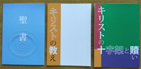

＊＊集会について＊＊
私たちの集まりは、聖書に書かれていることに準じていて、次のことばによります。
使徒の働き2章41～42節
彼のことばを受け入れた人々はバプテスマを受けた。
その日、三千人ほどが仲間に加えられた。彼らはいつも、使徒たちの教えを守り、交わりを持ち、パンを裂き、祈りをしていた。
私たちの集まりは、聖書に書かれていることに準じていて、次のことばによります。
使徒の働き2章41～42節
彼のことばを受け入れた人々はバプテスマを受けた。
その日、三千人ほどが仲間に加えられた。彼らはいつも、使徒たちの教えを守り、交わりを持ち、パンを裂き、祈りをしていた。
福音集会
バイブルクラス
日曜学校
（バイブルクラスは中学生、
日曜学校は小学生が対象です。）
※献金や寄付を要求することはありません※
〒950-0163
新潟市江南区東船場4丁目3-38



聖書の分冊と聖書に関する書物を無料で差し上げています。ご希望の方はメールまたは、ハガキに住所・氏名を記入の上、
「聖書を希望する」または、「希望する書物名」を書き、集会所あてに送ってください。
質問等がありましたら、何なりとお問い合わせください。